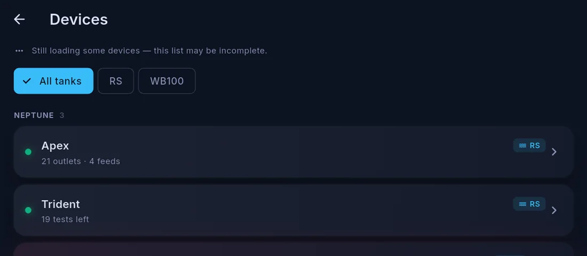
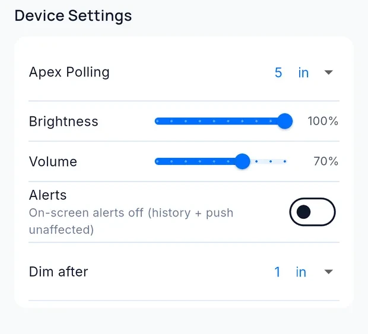

Devices and device health
Settings → Devices lists the equipment Cora Max can see and reports how it is doing.
The device list

Cora Max sees the same equipment as your phone, because both read the same account.
Filter chips at the top narrow the list to All tanks or one tank. Each entry carries a status dot, a one-line summary of what the device holds — 21 outlets · 4 feeds, 19 tests left — and the tank it belongs to.
Adding and configuring equipment is easier on the phone — see Adding, editing and removing devices.
Managing a Cora Max from your phone
Open the unit from your phone's Devices tab to see its variant, firmware version and when it was last seen, and to change its settings without walking to it.

| Setting | Does |
|---|---|
| Apex Polling | How often this unit reads the controller |
| Brightness | Screen brightness |
| Volume | Voice replies and the alert chime |
| Alerts | On-screen alert banners. Turning them off does not affect alert history or push notifications |
| Dim after | How long before the screen dims |
Below those settings, Assigned Tanks lists each tank this unit manages, with per-tank controls:
| Control | Does |
|---|---|
| Edit Dashboard | Opens that tank's Cora Max layout |
| Tank Settings | Journal, health, polling and thresholds |
| Polling | Names the device currently polling that tank |
| Make Primary Poller | Hands that tank's polling to this unit |
The minus button beside a tank removes it from this screen.
Device health
Settings → Cora Max → Firmware → Device health & controls is the diagnostics screen for the unit itself. It reports:
- Firmware and update state for this unit
- Wake state — whether this unit is currently the household's voice responder
- Per-tank Apex diagnostics — whether this unit is polling that tank's controller, whether it is the designated primary, and whether its writes are getting through
It also hosts a few controls, so common problems can be fixed at the wall rather than from a laptop:
- Claim or release the voice responder role
- Re-configure a tank's controller connection
- Open the outlets and feed controls
Why polling state matters
When more than one Cora device could read the same controller, one is designated the primary and the others defer. If readings stop for one tank but continue for another, this screen shows whether this unit believes it should be polling at all.
The primary can be chosen here, or from the phone — see More than one Cora device.
Written for Cora Max 0.28.37 and Cora Mobile 0.5.55.
Still stuck? Email cora@coraiq.tech and we'll help.